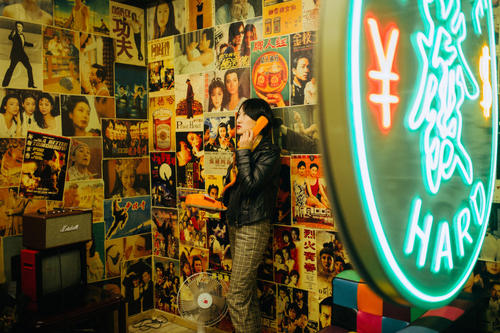

首页
构图
构图方法
构图工具介绍
构图练习
调色
调色工具介绍
色调类型
调色练习
测试
综合理论测试题
图片效果测试题
相册
1
2
3
4
5
1.PS色调工具滑块往左移图片呈(
B
)颜色
A.红色
B.绿色
C.紫红色
D.蓝色
2.以下哪张照片属于日系摄影风格(
C
)
A. 
B.
C.
D.
3.欧美风特点(
A
)
A.有较大对比度
B.有较小对比度
C.对比度不明显
D.以上说法都不正确
4.日系滤镜高光颜色特点(
B
)
A.偏棕红色
B.偏青蓝色
C.偏灰黑色
D.偏深绿色
5.增加边缘线周边对比度应使用(
C
)工具
A.饱和度工具
B.色温工具
C.锐度工具
D.亮度工具
<
>
查看正确答案